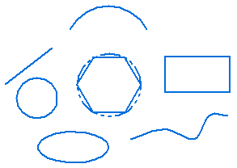
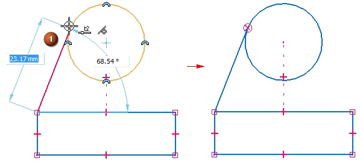
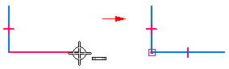
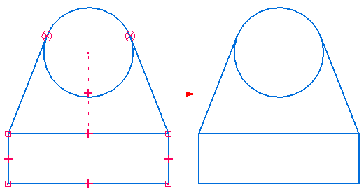
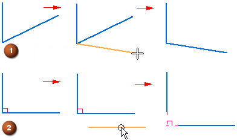
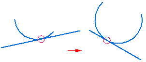
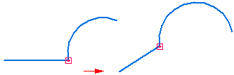
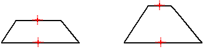

Drawing 2D elements
In Solid Edge, you can draw 2D elements to help you complete a variety of tasks. For example, you can use 2D elements to construct features in the Part environment and to draw layouts in the Assembly environment.
In the Draft environment, you can use 2D drawing tools to complete a variety of tasks such as drawing sketches from scratch on the 2D Model sheet or in 2D views, creating background sheet graphics, and defining cutting planes for section views. The drawing commands, relationships, and dimensions work similarly in all environments.
Drawing commands and tools
You can draw any type of 2D geometric element in Solid Edge, such as lines, arcs, circles, B-spline curves, rectangles, and polygons.

You can also use Solid Edge to do the following:
-
Move, rotate, scale, and mirror elements
-
Trim and extend elements
-
Add chamfers and fillets
-
Create precision graphics from a freehand sketch
-
Change the color of elements
Tools that work with the drawing commands—IntelliSketch, Intent Zones, and Grid—allow you to easily relate elements to each other, define your drawing intentions as you sketch, and provide precise coordinate input relative to any key position in the drawing.
Drawing dynamics
As you draw, the software shows a temporary, dynamic display of the element you are drawing (1). This display shows what the elements will look like if you click at the current cursor position. Relationship icons also display where the cursor is positioned.

Until you click the point that completely defines the element that you are drawing, values in edit boxes update as you move the cursor. This gives you constant feedback on the size and shape of the element you are drawing. The command bar for a particular sketch command contains additional options to control the characteristics of the sketch element.
When you lock a value by typing it into an edit box, the dynamic display of the element you are drawing shows that the value is locked. For example, if you lock the length of a line, the length of the dynamic line does not change as you move the cursor to set the angle. If you want to free the dynamics for a value, you can clear the highlighted value edit box by pressing the Backspace or Delete key.
Applying and displaying relationships
As you draw, IntelliSketch recognizes and applies 2D relationships that control element size, shape, and position. When you make changes, relationships help the drawing retain the characteristics you do not want altered.
When a relationship indicator is displayed at the cursor, you can click to apply that relationship. For example, if the horizontal relationship indicator is displayed when you click to place the end point of a line, the line will be drawn horizontal. You can also apply relationships to elements after you draw them.

Relationship handles displayed on the 2D geometry show you how elements are related. You can remove any relationship by deleting its handle. You can display or hide the relationship handles with the Relationship Handles command.

Maintaining relationships
You can draw and modify 2D elements in the way that best suits your design needs. You can make your assembly layouts and drawings associative by applying relationships, or you can draw them freely, without relationships. When you draw 2D elements in a part document, 2D relationships are maintained.
Maintaining relationships between 2D elements makes the elements associative (or related) to each other. When you modify a 2D element that is related to another 2D element, the other element updates automatically. For example, if you move a circle that has a tangent relationship with a line, the line also moves so that the elements remain tangent.
You can draw elements freely, or non-associatively. When you modify a non-associative portion of an assembly sketch or drawing, the changed elements move freely, without changing other portions of the design. For example, if you move a circle that is tangent to a line (but does not have a tangent relationship with the line) the line does not move with the circle.
To control whether you draw and modify 2D elements freely or associatively in layouts and drawings, use the Maintain Relationships command in the Assembly and Draft environments.
When you construct a synchronous feature using the 2D elements, the sketch elements are moved to the Used Sketches collector in PathFinder.
How 2D relationships work
An element that has no relationships applied can be moved and changed in various ways. For example, when there are no relationships between two lines (1), the lines can be moved and changed without affecting each other. If you apply a perpendicular relationship between the two lines (2), and move one line, the lines remain perpendicular.

When you apply a relationship between elements, the relationship is maintained when you modify either element. For example:
-
If a line and an arc share a tangent relationship, they remain tangent when either is modified.

-
If a line and arc share a connect relationship, they remain connected when either is modified.

Relationships also maintain physical characteristics such as size, orientation, and position.
-
You can make the size of two circles equal with an equal relationship.
-
You can make the orientation of two lines parallel with a parallel relationship.
-
You can connect a line and an arc with a connect relationship.
A relationship can also maintain a physical characteristic of an individual element. For example, you can make a line horizontal. The line remains horizontal even if you change its position and length.

Construction elements
For 2D elements you draw in a part or assembly document, you can specify that the element is considered a construction element. Use the Construction command on the Sketching tab to change selected sketch elements to construction elements. Construction elements are not used to construct features—they are used only as drawing aids. The line style for a construction element is dashed.
Create as Construction elements
Use the Create as Construction command on the Sketching tab to change the mode to construction. All sketch elements created in this mode are construction elements. Click the command again to return to the profile element mode.